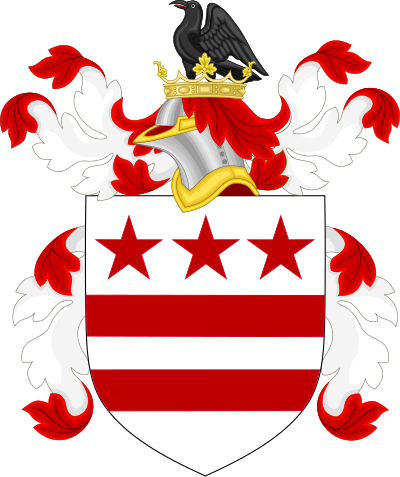
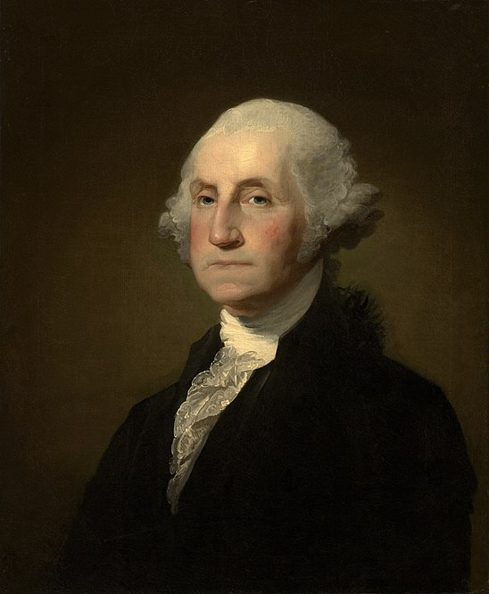

Военная карьера
Lourens Washington при жизни был адъютантом колониального ополчения, но уже в 1752 году колониальные власти решили сделать три адъютантские должности вместо одной. Джордж Вашингтон никогда не имел дела с военными, но решил заполучить это место. Ещё до возвращения Лоуренса Джордж посещал Уильямсберг и разговаривал с губернатором по этому вопросу. Смерть Лоуренса ускорила принятие решения об адъютантских должностях, и 6 ноября колониальные власти приняли решение о создании 4-х дистриктов и 4-х адъютантских должностей. Джордж получил звание адъютанта и Южный Дистрикт (пространство между рекой Джеймс и границей Северной Каролины), который считался самым далёким и наименее интересным. В ту же осень открылась новая масонская ложа во Фредериксберге, и 4 ноября Джордж вступил в неё, уплатив вступительный взнос в $2,3.
Весной 1753 года губернатор приказал устроить общий смотр ополчения в сентябре, а адъютантам было приказано подготовить к смотру офицеров. Вашингтону пришлось изучить множество специализированной литературы, чтобы разобраться в вопросе. Между тем осложнилась ситуация на фронтире: в 1749 году маркиз де Галиссеньер[en], губернатор Канады, стал прилагать усилия по присоединению региона Огайо к французским колониям. Пенсильвания и Вирджиния начали готовиться противодействовать французам. Губернатор решил отправить миссионера, который бы предупредил французов о нежелательности их присутствия в Огайо.
Lord Farfax рассказал об этом Вашингтону, а тот отправился в Уильямсберг и предложил назначить его этим миссионером[23]. Как ни странно, губернатор согласился. Впоследствии Вашингтон сам удивлялся, что столь важное задание было поручено столь молодому и неопытному человеку[24]. В ноябре 1753 — январе 1754 года он совершил экспедицию в Огайо, доставив губернатору важную информацию о намерениях французов. Благодаря экспедиции Вашингтон приобрёл навыки выживания в лесу, познакомился с нравами индейцев и научился искусству переговоров с ними[25]. Сразу же после возвращения ему было приказано возглавить полк и отправиться с ним в долину Огайо: это привело к столкновению с французами и сражению за форт Несессити, в ходе которого полк Вашингтона капитулировал
Президентство
С первых дней своего президентства Вашингтону пришлось придумывать правила президентского этикета, которые позволяли бы ему общаться с людьми без ущерба для работы и не вызывали при этом обвинений в подражании королевским дворам Европы. Он разработал правила приёмов и официальных обедов, которые проходили сначала в его первой резиденции на Черри-Стрит, а с 1790 года во второй резиденции на Бродвее. Офисная работа сказалась на его здоровье, хотя и не серьёзно. 1 сентября 1789 года Вашингтон узнал о смерти своей матери, Мэри Болл Вашингтон
Первый срок
Весь первый год президент занимался подбором кандидатур для федерального правительства. Сенат не стал вмешиваться в этот процесс, что установило традицию, по которой глав департаментов назначает президент. В своё первое правительство Вашингтон включил Генри Нокса (военные дела), Эдмунда Рэндольфа (юстиция), Томаса Джефферсона (иностранные отношения) и Александра Гамильтона (финансы). В это же время Джеймс Мэдисон разрабатывал поправки к Конституции, известные как «Билль о правах». При поддержке Вашингтона эти поправки были одобрены Конгрессом в сентябре 1789 года и отправлены в легислатуры штатов на ратификацию. Принятие билля привело к вступлению в Союз Северной Каролины и Род-Айленда
Второй срок
В ноябре 1792 года прошли вторые президентские выборы в истории США: Вашингтон получил 132 голоса выборщиков. Джон Адамс получил 77 голосов и остался вице-президентом. Вторая инаугурация Вашингтона[en] была назначена на 14 марта[148]. Критика в свой адрес заставила Вашингтона провести всю церемонию предельно скромно. Он явился к зданию Конгресса без всякого сопровождения, прочитал короткую речь, дал президентскую клятву и сразу отправился домой